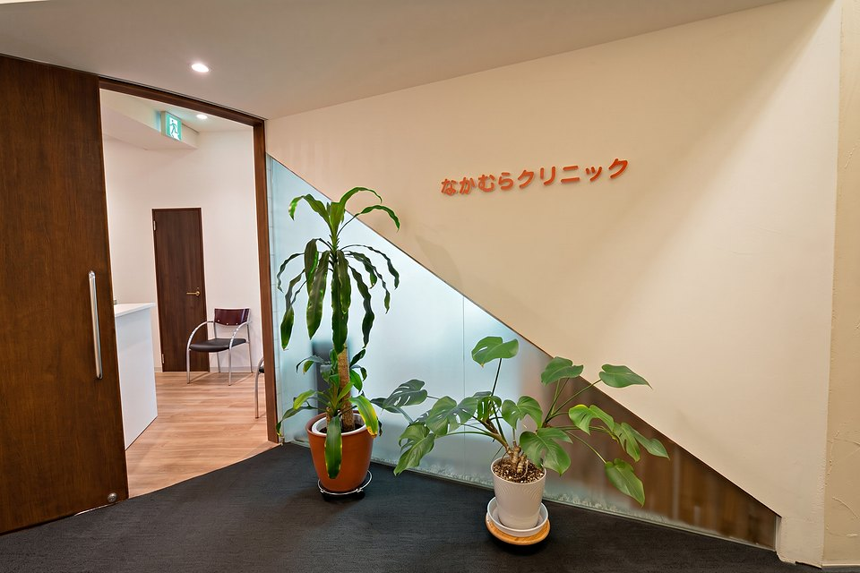
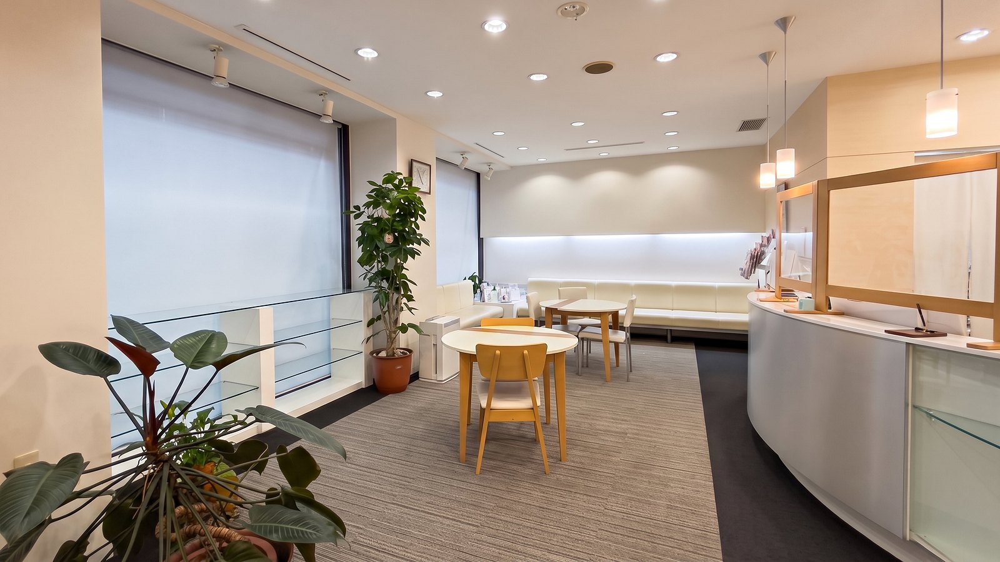

一般内科
健診で気になった数値も、急なかぜも。
こんなときに
- 健診で「要再検査」「要精密検査」と言われた（血圧・血糖・コレステロール）
- 高血圧・糖尿病・脂質異常症などの生活習慣病を、続けて診てほしい
- のどの痛み・せき・鼻水などのかぜ症状（発熱がある方は下の「発熱外来」へ）
- 頭痛・胃の痛み・だるさなど、いつもと違う体調
- はたらきながら、かかりつけ医をもっておきたい
発熱外来
発熱・かぜ症状の方は、来院前にまずお電話ください。院内の動線に配慮してご案内します。
はたらく人の、からだとこころのかかりつけ。

内科も、精神科も、同じ受付・同じ待合です。からだにあらわれるサインも、そのままご相談いただけます。
昼休みや外出の合間に、そのまま。※ 金曜など一部の枠は完全予約制です。
カネセ中央ビル1階。通りに面した、入りやすい入口です。
ひとつの受付から、ふたつの診療科へ。
健診で気になった数値も、急なかぜも。
発熱・かぜ症状の方は、来院前にまずお電話ください。院内の動線に配慮してご案内します。
眠りのこと、気持ちのこと、仕事のこと。まずは話すところから。
予防接種インフルエンザなど。種類・在庫の確認のため、事前にお電話ください。
症状やご相談内容に応じて、適切な医療機関のご紹介も行います。
※ オンライン診療にも対応しています。詳しくはお電話でお問い合わせください。

| 月 | 火 | 水 | 木 | 金 | 土第2・4のみ | 日・祝 | |
|---|---|---|---|---|---|---|---|
| 午前9:00–13:00土曜は10:00から | ◎予約なしOK | ◎予約なしOK | ◎予約なしOK | −休診 | ●完全予約制 | ◎予約なしOK | −休診 |
| 午後14:00–17:45（受付）診察は18:00まで | ◎予約なしOK | ◎予約なしOK | ●完全予約制 | −休診 | ●完全予約制 | ●完全予約制 | −休診 |
午前 9:00–13:00（土曜は10:00〜）／午後 14:00–17:45（受付）
お電話には受付スタッフが出ます。「はじめてです」とお伝えいただくだけで大丈夫です。
受付は診療日の17:45まで。
いしかわ よしひろ
院長 石川 賀弘内科
からだとこころ、分けずに話せる診察室です。
お待たせしないこと。そして、診察を急がせないこと。はたらく皆さまが通いやすいクリニックであるために、この2つを大切にしています。
血圧や血糖の数値のことも、最近眠れないことも、どちらも同じ受付から。気になっていることを、そのままお話しください。
精神科の診療は、担当医がじっくりお話をうかがいます。話す順番も、うまくまとまっているかも、気にしなくて大丈夫。内科の診察で気になったことは、同じ院内で精神科の担当医におつなぎします。
からだのことも、こころのことも。
まずは、お電話でご相談ください。
当院は「機能強化加算」の施設基準に適合している旨を届け出ており、かかりつけ医として以下の取組みを行っています。
医療法人佳真会 なかむらクリニック 院長